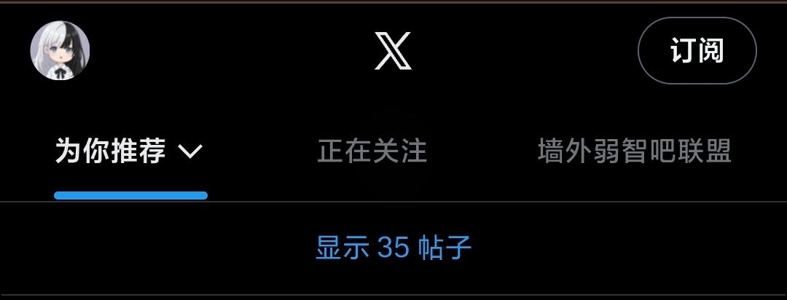
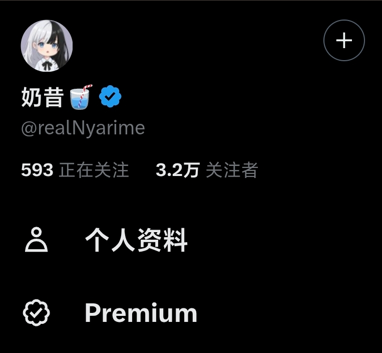
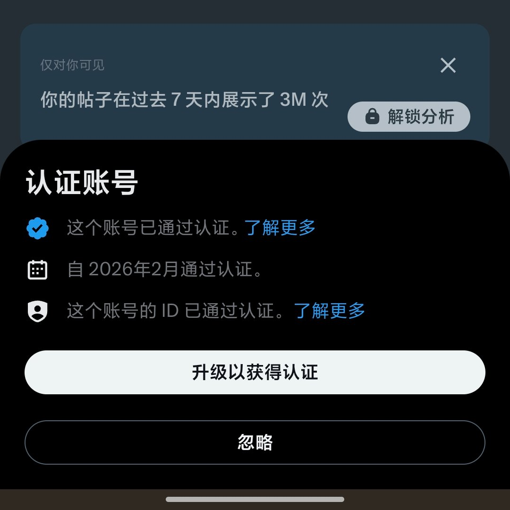

奶昔🥤
@realNyarime
@CyberKanjousen 关键是分析那些都用不了，太抽象了



奶昔🥤
@realNyarime
一觉醒来，发现X Premium功能出了点问题，主页右上角还出现「订阅」按钮
侧边的Premium甚至连P+都不是，个人资料也跳「解锁分析」但premium_sign_up点不进去
蓝标还在，点进去弹「升级以获得认证」？？？这不早就认证了吗
有跟我一样出现这个问题的推友吗？ https://t.co/Eu8VXooDBx
サイバー環状線
@CyberKanjousen
@realNyarime X 开发团队在干什么，生产环境当测试环境吗😅